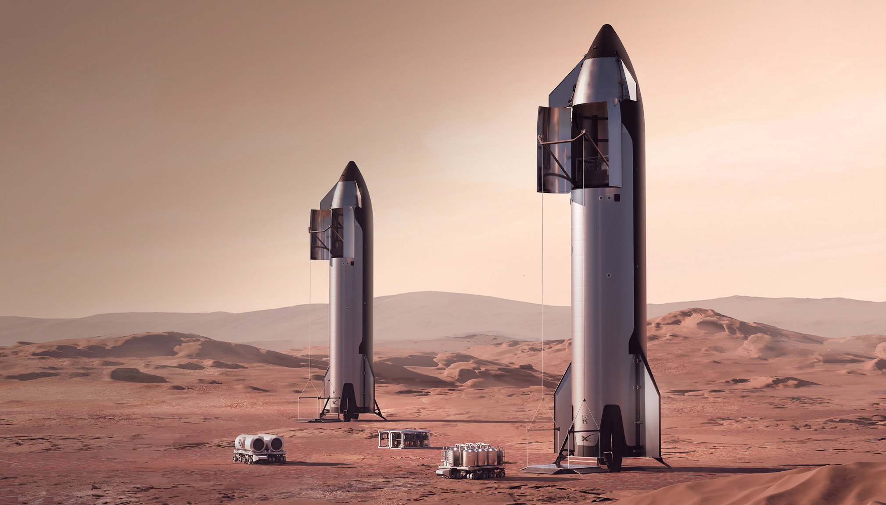

01 / The mission
Making life
multiplanetary
把运输、连接与计算建设成一套可验证的基础设施，让人类能力走向地球之外。
进入任务Starship / SpaceX official imagery / non-commercial concept use
- System
- Ship + Super Heavy
- Design intent
- Full & rapid reuse
- Status language
- Designed for — not completed
Starship system / SpaceX official imagery / concept presentation

03 / Proven capability
Launch. Return. Learn.
Falcon
Falcon 9 是可重复使用的两级轨道级火箭。这里呈现能力与路径，不把持续变化的发射、着陆或复飞次数固化成宣传数字。
了解 FalconFalcon 9 landing / SpaceX official imagery / concept presentation

向国际空间站运送货物
Since 2020在 NASA Commercial Crew Program 下运送人员
Dragon above Earth / SpaceX official imagery / concept presentation

05 / Connectivity
Connect
Starlink
位于低地球轨道的卫星星座，为地球提供宽带互联网。覆盖与服务能力取决于地区条件与监管许可。
了解轨道连接Orbital trajectory imagery / SpaceX official imagery / concept presentation
06 / Orbital compute
In developmentCompute
STARMIND
SpaceX 正在开发的轨道 AI 计算系统。它属于正在建设的下一层能力，而不是已规模运营的现实。
了解系统构想Orbital systems imagery / SpaceX official imagery / concept presentation

07 / Long horizon
One mission
More than
one world
火星是长期愿景，不是倒计时。今天的每一次测试、回收、连接与计算，都是把目的地变成工程问题。
了解火星愿景Mars concept imagery / SpaceX official imagery / concept presentation
08 / Choose the next step
A future
worth building.
继续了解发射任务、工程系统、公司与投资者信息。动态信息交给官方实时入口，概念站只保留可核验的结构。